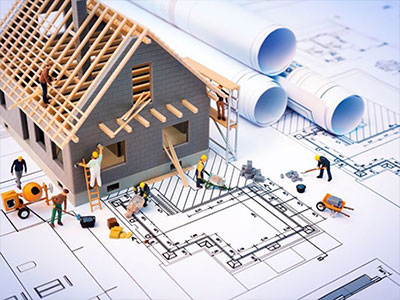
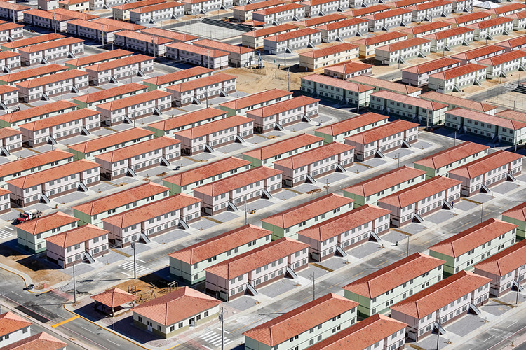

Serviços prestado
Edificações
O técnico em edificações está presente no cotidiano da execução
de uma obra. Seu caráter multifuncional permite que ele seja necessário
tanto no escritório de uma construtora quanto no canteiro de obras.
Sua principal função é a de que o desenvolvimento e execução das obras
sigam em conformidade com o projeto elaborado.
Serviços prestado
Habitacional
O programa reúne iniciativas habitacionais do governo federal
para ampliar o estoque de moradias e atender as necessidades habitacionais
da população. O Casa Verde e Amarela vai promover o desenvolvimento
institucional de forma eficiente no setor de habitação e estimular a
modernização do estimular a modernização do setor da construção e a
inovação tecnológica.
Serviços prestado
Ambiental
As atividades econômicas mundiais em geral consomem
grande volume de recursos naturais e nem todas as empresas se
preocupam em zelar da natureza. Mas, felizmente, organizações
preocupadas com a saúde ambiental local, promovendo ações
associadas a projetos inteligentes de engenharia ambiental,
com objetivo de aumentar a produtividade e reduzir os impactos
ambientais.
Central de Atendimento
0800 000 0000
© 2015-2021 ORV / ENGENHARIA Ltda.